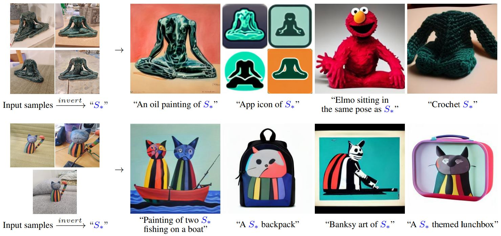
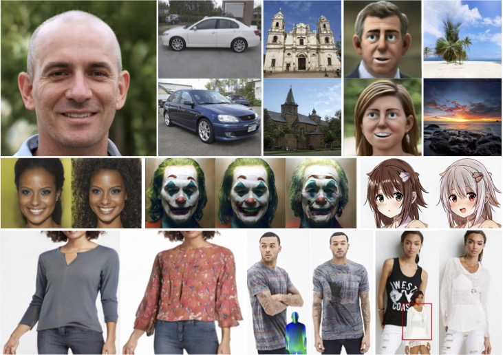

Research
2024

InstantRestore: Single-Step Personalized Face Restoration with Shared-Image Attention


2023


Breathing Life Into Sketches Using Text-to-Video Priors
CVPR 2024, Highlight

Cross-Image Attention for Zero-Shot Appearance Transfer
SIGGRAPH 2024, Conference

ConceptLab: Creative Generation using Diffusion Prior Constraints
ACM TOG 2024

A Neural Space-Time Representation for Text-to-Image Personalization
SIGGRAPH Asia 2023, Journal

CLIPascene: Scene Sketching with Different Types and Levels of Abstraction
ICCV 2023, Oral
Attend-and-Excite: Attention-Based Semantic Guidance for Text-to-Image Diffusion Models
SIGGRAPH 2023, Journal
TEXTure: Text-Guided Texturing of 3D Shapes
SIGGRAPH 2023, Conference
2022

An Image is Worth One Word: Personalizing Text-to-Image Generation using Textual Inversion
ICLR 2023, Notable Top-25%
Third Time's the Charm? Image and Video Editing with StyleGAN3
Advances in Image Manipulation Workshop, ECCV 2022

State-of-the-Art in the Architecture, Methods and Applications of StyleGAN
EUROGRAPHICS 2022 (STARs)
2021
HyperStyle: StyleGAN Inversion with HyperNetworks for Real Image Editing
CVPR 2022

ReStyle: A Residual-Based StyleGAN Encoder via Iterative Refinement
ICCV 2021
Only a Matter of Style: Age Transformation Using a Style-Based Regression Model
SIGGRAPH 2021
2020

Encoding in Style: a StyleGAN Encoder for Image-to-Image Translation
CVPR 2021